Native validation complete: 34 tests each on Instinct 2S and epix2, normal-memory settings recovery, rain/snow, always-on and wake. Fresh display and AOD captures included. All 11 hardware variants exported and Garmin SDK signatures verified. Final package-native settings recovery passed. Submitted to Garmin: 1.0.0, pending approval; file and signature Verified. All 28 localized copies/banners and 5 screenshot panels persisted. Runtime remains English / Simplified Chinese.
Garmin application preview (owner only until approval)
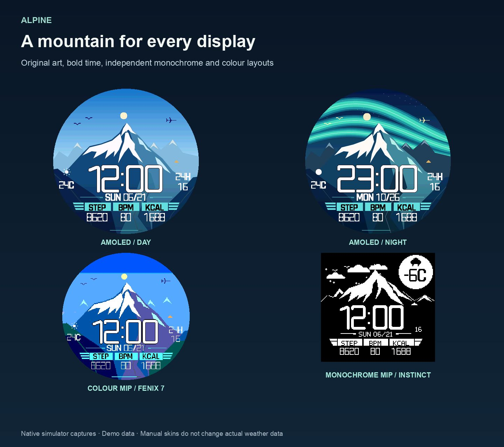
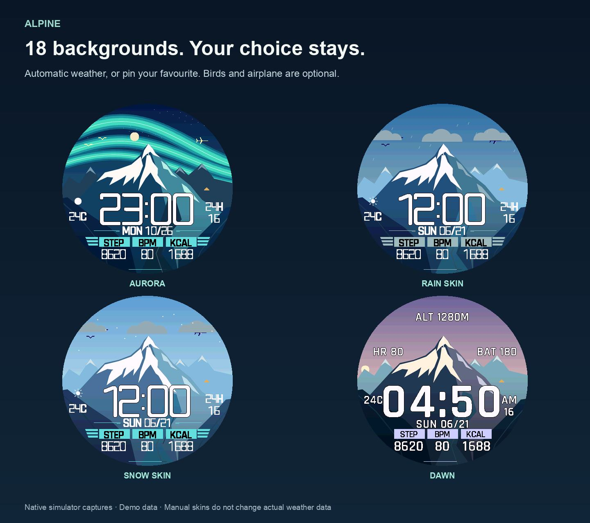
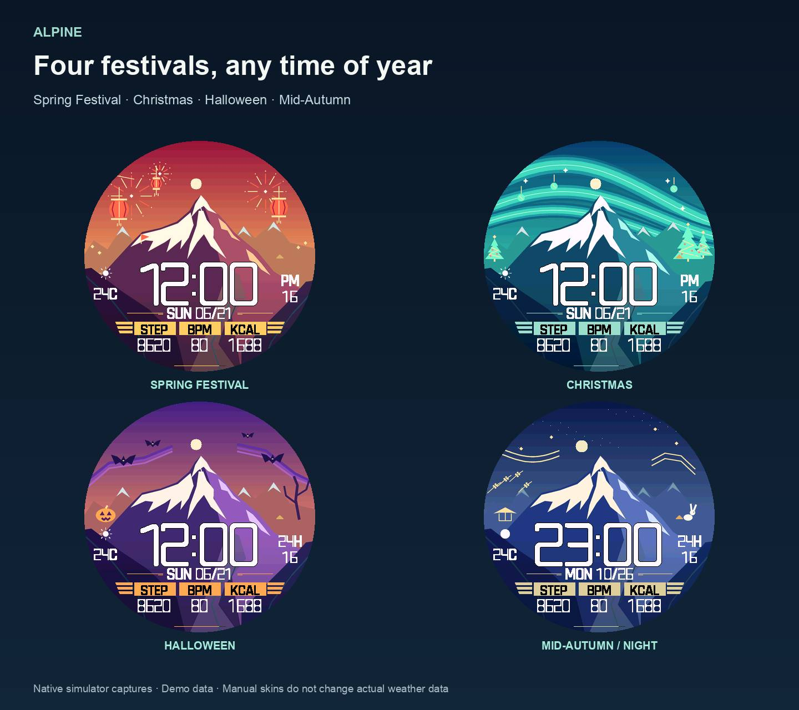
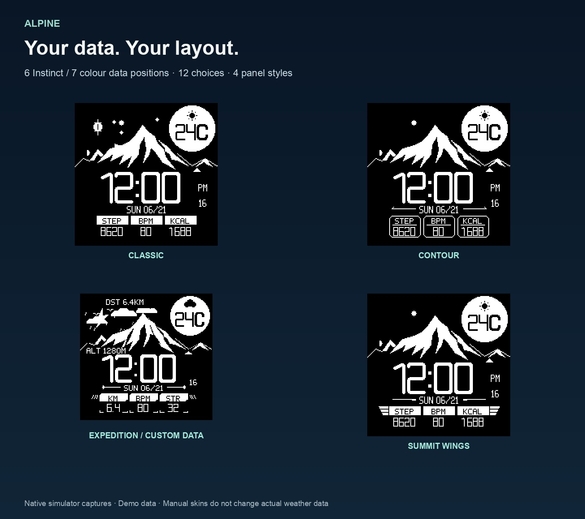
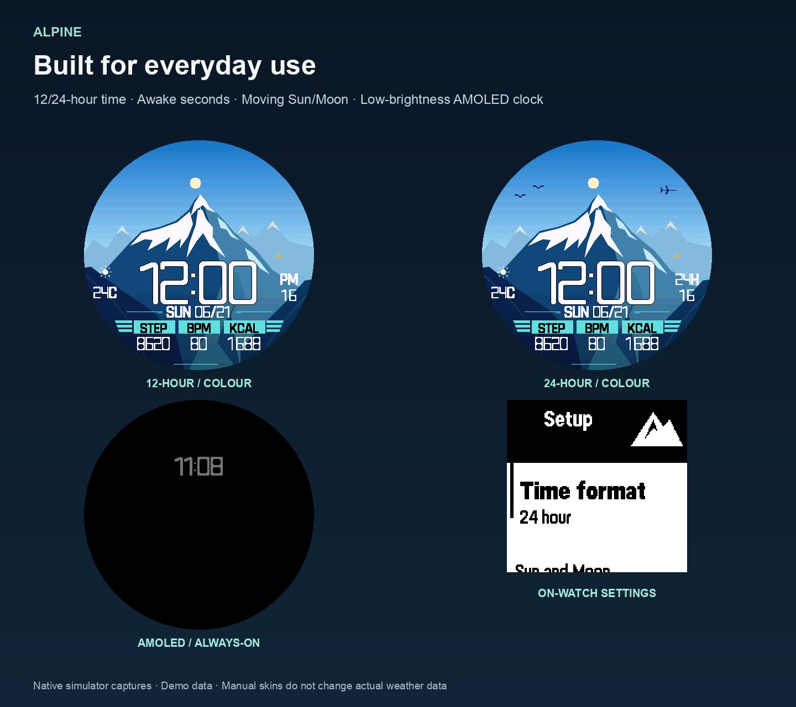
A full-screen Everest-inspired mountain watch face with bold time and original scenery. • 18 background choices: automatic, dawn, day, dusk, night, rain, snow, overcast, fog, lightning, aurora, rainbow, fireworks, warm accents and four festivals: Spring Festival, Christmas, Halloween and Mid-Autumn. • Pin any background and keep it after restarting. Choose weather-linked effects or a fixed skin. Optional birds and airplane are off by default. • Six data positions on Instinct and seven on round colour screens; independently choose or hide steps, heart rate, total calories, altitude, battery-day estimate, distance, weather/temperature, stress, notifications, sunrise or sunset. Four data-panel styles. • System/12/24-hour time, optional awake seconds, moving Sun/Moon and real Moon phase. Night-only Moon is the default. Step-goal rainbow/fireworks and a notification tent light in automatic scenes. • Separate monochrome MIP, colour MIP and AMOLED artwork. AMOLED has a dim moving always-on clock with minute updates. Cached weather/location; no active GPS or developer network requests. Watch menus/settings remain English and Simplified Chinese; face labels use compact English. Store translations do not add watch languages. Data availability depends on device, permissions and sync; missing values show --. Sky positions are approximate, with an illustrative fallback without location. Sample images use demo data. Free, no ads or subscription; health/location data stays on the watch.
First public release: 18 backgrounds, optional birds and airplane, configurable data, four panel styles, 12/24-hour time, Sun/Moon, weather scenes and low-brightness AMOLED always-on. Optimized second updates, heart-rate value patches and cached data reads. Watch menus remain English and Simplified Chinese; only the store page is translated.
全屏珠峰灵感山景表盘，大字时间，原创雪面、远山与天空。 • 18 项背景：自动、黎明、白昼、黄昏、夜晚、雨、雪、阴、雾、闪电、极光、彩虹、烟花、暖色强调，以及春节、圣诞、万圣节、中秋。 • 任意背景可固定为常用默认，重启仍保留；可选择天气联动或固定皮肤。飞鸟、飞机装饰默认关闭，可分别或同时开启。 • 本能系列 6 个数据位、圆形彩屏 7 个数据位，均可独立更换或隐藏：步数、心率、总热量、海拔、系统预计剩余天数、距离、天气/温度、压力、通知、日出、日落。另有 4 种数据区装饰。 • 跟随系统或独立 12/24 小时制，可选抬腕秒数；日月位置随时间变化并显示真实月相，默认白天只显示太阳。自动场景支持步数达标彩虹/烟花和通知帐篷灯光。 • 黑白 MIP、彩色 MIP、AMOLED 分别绘制；AMOLED 常亮为独立低亮移动时钟，按分钟更新。读取已有天气/位置缓存，不主动启动 GPS，不请求开发者服务器。 表盘菜单与设置保持中英文，表盘标签使用紧凑英文；商店多语言不代表新增表盘语言。数据依设备、权限与同步情况，缺失显示 --。天象为近似计算，无位置时使用时段示意。图片使用演示数据。免费，无广告和订阅；健康与位置数据留在手表本地。
首次公开发布：18 项背景、可选飞鸟飞机、自定义数据位、4 种数据区样式、12/24 小时制、日月与天气场景、AMOLED 低亮常亮。优化秒级更新、心率数字局部重画和缓存数据读取。表盘菜单仍保持中英文，仅商店页面新增多语言。
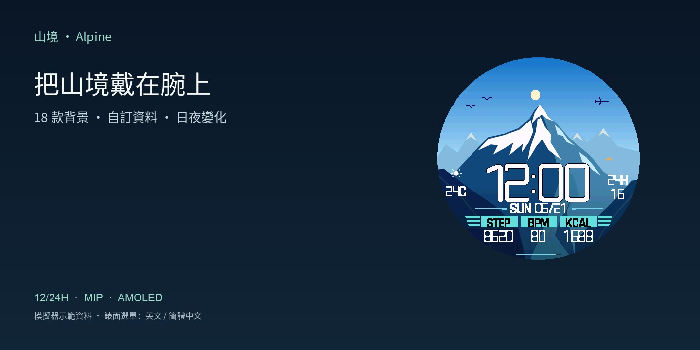
全螢幕珠峰靈感山景錶面，大字時間，原創雪面、遠山與天空。 • 18 種背景：自動、黎明、白晝、黃昏、夜晚、雨、雪、陰、霧、閃電、極光、彩虹、煙火、暖色強調，以及春節、聖誕節、萬聖節、中秋。 • 任意背景可固定為常用預設，重新啟動後仍保留；可選天氣連動或固定風格。飛鳥、飛機裝飾預設關閉，可分別或同時開啟。 • Instinct 系列 6 個、圓形彩色螢幕 7 個資料位置，可獨立更換或隱藏：步數、心率、總熱量、海拔、系統預估電池天數、距離、天氣/溫度、壓力、通知、日出、日落。提供 4 種資料區樣式。 • 跟隨系統或選擇 12/24 小時制，可選喚醒時顯示秒數；日月位置隨時間變化，月相依實際計算，預設白天只顯示太陽。自動場景另有步數達標彩虹/煙火與通知帳篷燈光。 • 黑白 MIP、彩色 MIP、AMOLED 獨立繪製；AMOLED 常亮使用低亮移動時鐘，每分鐘更新。讀取既有天氣/位置快取，不主動啟動 GPS，也不連線至開發者伺服器。 錶面選單與設定仍為英文及簡體中文，資料標籤使用精簡英文；商店翻譯不會新增錶面語言。資料依裝置、權限及同步狀況，缺失顯示 --。天象為近似計算，無位置時為時段示意。圖片使用示範資料。免費、無廣告或訂閱；健康與位置資料留在手錶內。
首次公開發行：18 種背景、可選飛鳥飛機、自訂資料位置、4 種資料區樣式、12/24 小時制、日月與天氣場景、AMOLED 低亮常亮。改善秒級更新、心率數字局部重繪與快取讀取。錶面選單仍為英文及簡體中文，僅商店頁面新增多語言。
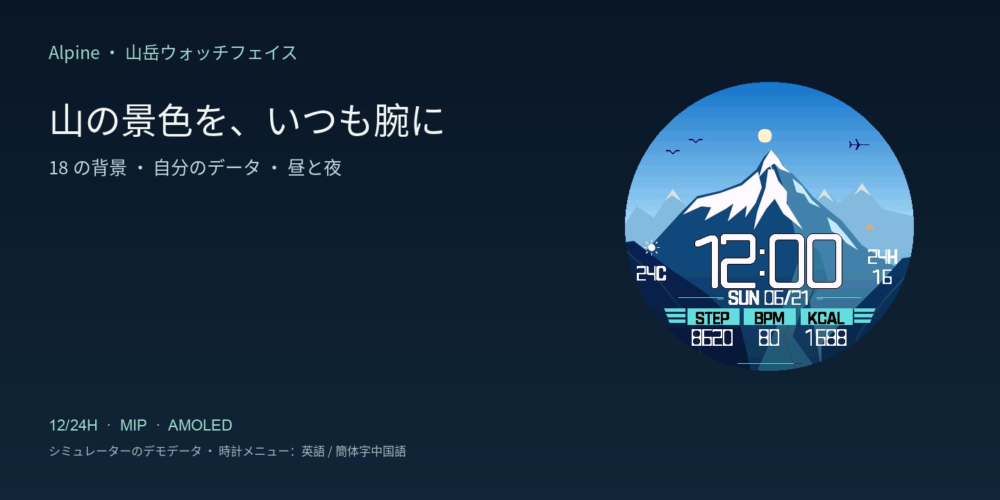
エベレストをイメージしたオリジナルの山岳風景と、大きく見やすい時刻表示。 • 背景は18種類。自動、夜明け、昼、夕暮れ、夜、雨、雪、曇り、霧、雷、オーロラ、虹、花火、暖色、春節、クリスマス、ハロウィン、中秋節。 • 好きな背景を固定して保存でき、再起動後も維持。天気連動も選べます。鳥と飛行機は初期状態では非表示で、個別または同時に有効化できます。 • Instinctは6か所、丸型カラー画面は7か所のデータ欄。歩数、心拍数、総消費カロリー、高度、システム推定バッテリー日数、距離、天気/気温、ストレス、通知、日の出・日の入りから選択または非表示。データパネルは4種類。 • システム連動/12/24時間表示、起動中の秒表示、時間に応じた太陽と月、実際の月相。初期設定では昼の月は表示しません。自動場面には歩数目標達成時の虹/花火と通知テントの灯りもあります。 • モノクロMIP、カラーMIP、AMOLED用の専用描画。AMOLED常時表示は低輝度の移動時計を毎分更新。天気と位置は既存キャッシュを利用し、GPSを起動せず、開発者サーバーにも接続しません。 時計のメニューと設定は英語・簡体字中国語のままです。ラベルは短い英語表記です。ストア翻訳で時計の言語は増えません。データは機種、権限、同期に依存し、未取得は --。天体位置は近似で、位置情報がない場合は時間帯のイメージ表示です。画像はデモデータ。無料、広告・定期購入なし。健康・位置データは時計内に保持します。
初回公開版。18の背景、鳥と飛行機、データ欄、4種類のパネル、12/24時間表示、日月・天気、AMOLED低輝度常時表示。秒更新、心拍数の部分描画、キャッシュ読み出しを最適化しました。時計のメニューは英語・簡体字中国語のままで、翻訳はストアページのみです。
에베레스트에서 영감을 받은 독창적인 산 풍경과 크고 선명한 시간 표시를 즐기세요. • 자동, 새벽, 낮, 황혼, 밤, 비, 눈, 흐림, 안개, 번개, 오로라, 무지개, 불꽃놀이, 따뜻한 강조색, 춘절, 크리스마스, 핼러윈, 중추절까지 18가지 배경. • 원하는 배경을 기본으로 저장하면 재시작 후에도 유지됩니다. 날씨 연동 또는 고정 테마를 선택하세요. 새와 비행기 장식은 기본적으로 꺼져 있으며 개별 또는 함께 켤 수 있습니다. • Instinct는 6개, 원형 컬러 화면은 7개 데이터 위치를 지원합니다. 걸음 수, 심박수, 총 칼로리, 고도, 시스템 예상 배터리 일수, 거리, 날씨/온도, 스트레스, 알림, 일출·일몰을 선택하거나 숨길 수 있습니다. 데이터 패널 스타일은 4가지입니다. • 시스템/12/24시간 형식, 깨어 있을 때의 초 표시, 움직이는 해와 달 및 실제 달의 위상. 기본값은 낮에 달을 숨깁니다. 자동 장면에는 걸음 목표 달성 무지개/불꽃놀이와 알림 텐트 조명도 있습니다. • 흑백 MIP, 컬러 MIP, AMOLED 전용 그래픽. AMOLED 상시 표시에서는 어두운 이동 시계를 분 단위로 갱신합니다. 기존 날씨·위치 캐시를 사용하며 GPS를 켜거나 개발자 서버에 연결하지 않습니다. 워치 메뉴와 설정은 영어·중국어 간체 그대로이며 데이터 라벨은 짧은 영어입니다. 스토어 번역으로 워치 언어가 추가되지는 않습니다. 데이터는 기기·권한·동기화에 따라 다르며 없으면 --로 표시합니다. 천체 위치는 근사치이고 위치 정보가 없으면 시간대 예시를 사용합니다. 이미지는 데모 데이터입니다. 무료, 광고·구독 없음. 건강·위치 데이터는 워치에 남습니다.
첫 공개 버전: 18가지 배경, 선택형 새·비행기, 맞춤 데이터, 패널 4종, 12/24시간, 해·달과 날씨, AMOLED 저휘도 상시 표시. 초 갱신, 심박수 부분 그리기와 캐시 읽기를 최적화했습니다. 워치 메뉴는 영어·중국어 간체 그대로이며 스토어만 번역합니다.
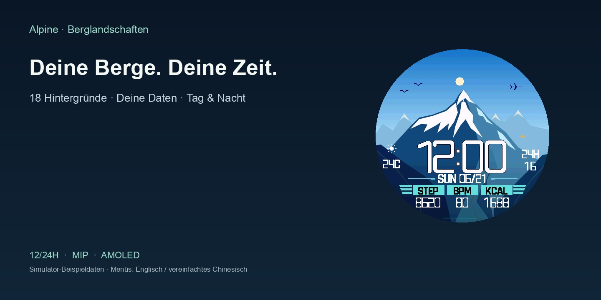
Ein bildschirmfüllendes Berg-Zifferblatt mit eigener, vom Everest inspirierter Grafik und großer Uhrzeit. • 18 Hintergründe: automatisch, Morgengrauen, Tag, Abend, Nacht, Regen, Schnee, Wolken, Nebel, Blitz, Polarlicht, Regenbogen, Feuerwerk, warme Akzente sowie Frühlingsfest, Weihnachten, Halloween und Mittherbstfest. • Jeden Hintergrund dauerhaft speichern, auch über Neustarts hinweg. Wettereffekte koppeln oder das Motiv fixieren. Vögel und Flugzeug sind standardmäßig aus und einzeln oder zusammen zuschaltbar. • 6 Datenpositionen auf Instinct, 7 auf runden Farbdisplays; Schritte, Puls, Gesamtkalorien, Höhe, geschätzte Batterietage, Distanz, Wetter/Temperatur, Stress, Mitteilungen, Sonnenauf- und -untergang wählen oder ausblenden. 4 Panel-Stile. • System-, 12- oder 24-Stundenformat, optionale Sekunden im Wachmodus, wandernde Sonne/Mond und echte Mondphase. Tagsüber ist der Mond standardmäßig verborgen. Automatische Szenen bieten Ziel-Regenbogen/Feuerwerk und ein Mitteilungs-Zeltlicht. • Eigene Grafik für monochromes MIP, Farb-MIP und AMOLED. Gedimmte, wandernde AMOLED-Daueranzeige mit Minutenaktualisierung. Wetter und Position aus dem Cache; kein GPS-Start und keine Entwickler-Netzwerkanfragen. Uhrenmenüs bleiben Englisch/vereinfachtes Chinesisch, Datenkürzel Englisch. Die Store-Übersetzung erweitert keine Uhrensprachen. Verfügbarkeit hängt von Gerät, Berechtigungen und Synchronisierung ab; fehlende Werte: --. Himmelspositionen sind Näherungen, ohne Position nur eine Tageszeitdarstellung. Bilder zeigen Demodaten. Kostenlos, ohne Werbung/Abo; Gesundheits- und Standortdaten bleiben auf der Uhr.
Erste öffentliche Version: 18 Hintergründe, optionale Vögel/Flugzeug, Datenfelder, 4 Panel-Stile, 12/24 Stunden, Sonne/Mond, Wetter und gedimmtes AMOLED Always-On. Sekunden, Pulswert-Patches und Cache-Zugriffe optimiert. Uhrenmenüs bleiben Englisch/vereinfachtes Chinesisch; nur die Store-Seite ist übersetzt.
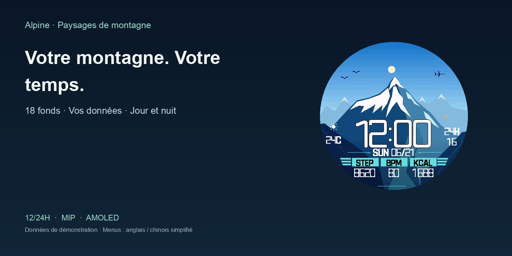
Un cadran plein écran aux paysages originaux inspirés de l’Everest, avec une heure bien lisible. • 18 fonds : automatique, aube, jour, crépuscule, nuit, pluie, neige, nuages, brouillard, éclairs, aurore polaire, arc-en-ciel, feux d’artifice, accents chauds, fête du Printemps, Noël, Halloween et fête de la Mi-Automne. • Enregistrez n’importe quel fond, conservé après redémarrage. Choisissez le suivi météo ou un thème fixe. Oiseaux et avion sont désactivés par défaut, activables séparément ou ensemble. • 6 emplacements sur Instinct, 7 sur les écrans couleur ronds : pas, fréquence cardiaque, calories totales, altitude, autonomie estimée en jours, distance, météo/température, stress, notifications, lever/coucher du soleil, ou masquage. 4 styles de panneaux. • Format système/12/24 h, secondes facultatives à l’éveil, Soleil/Lune mobiles et phase lunaire réelle. Lune masquée le jour par défaut. Scènes automatiques avec arc-en-ciel/feux d’artifice à l’objectif de pas et lumière de tente pour les notifications. • Dessins distincts pour MIP monochrome, MIP couleur et AMOLED. Horloge AMOLED permanente atténuée et déplacée, actualisée chaque minute. Utilise les caches météo/position, sans activer le GPS ni contacter un serveur du développeur. Menus et réglages de la montre restent en anglais/chinois simplifié, avec libellés anglais courts. La traduction du Store n’ajoute pas de langues à la montre. Données selon l’appareil, les autorisations et la synchronisation ; valeurs absentes : --. Positions célestes approximatives, illustration horaire sans position. Images de démonstration. Gratuit, sans publicité ni abonnement ; données de santé/localisation conservées sur la montre.
Première version publique : 18 fonds, oiseaux/avion optionnels, données configurables, 4 panneaux, heure 12/24 h, Soleil/Lune, météo et AMOLED Always-On atténué. Optimisation des secondes, du tracé partiel du pouls et des caches. Menus de la montre toujours anglais/chinois simplifié ; seule la fiche est traduite.
Esfera de pantalla completa con paisajes originales inspirados en el Everest y una hora grande y legible. • 18 fondos: automático, amanecer, día, atardecer, noche, lluvia, nieve, nubes, niebla, rayos, aurora, arcoíris, fuegos artificiales, tonos cálidos, Fiesta de la Primavera, Navidad, Halloween y Festival de Medio Otoño. • Guarda cualquier fondo como habitual; se conserva al reiniciar. Elige efectos según el tiempo o un diseño fijo. Aves y avión desactivados por defecto, activables por separado o juntos. • 6 posiciones de datos en Instinct y 7 en pantallas redondas a color: pasos, pulso, calorías totales, altitud, días de batería estimados, distancia, tiempo/temperatura, estrés, avisos, salida/puesta del sol, o esconder. 4 estilos de panel. • Formato del sistema/12/24 horas, segundos opcionales al activarse, Sol/Luna móviles y fase lunar real. La Luna se oculta de día por defecto. Escenas automáticas con arcoíris/fuegos artificiales al lograr pasos y luz de tienda para avisos. • Gráficos propios para MIP monocromo, MIP a color y AMOLED. Reloj AMOLED permanente tenue y desplazado, actualizado cada minuto. Usa tiempo y posición en caché, sin activar GPS ni contactar servidores del desarrollador. Los menús y ajustes del reloj siguen en inglés/chino simplificado; las etiquetas son abreviaturas inglesas. Traducir la ficha no añade idiomas al reloj. Datos según dispositivo, permisos y sincronización; ausentes: --. Posiciones celestes aproximadas; sin ubicación, ilustración horaria. Imágenes con datos de muestra. Gratis, sin anuncios ni suscripción; salud y ubicación permanecen en el reloj.
Primera versión pública: 18 fondos, aves/avión opcionales, datos configurables, 4 paneles, hora 12/24 h, Sol/Luna, tiempo y AMOLED permanente tenue. Optimizados segundos, redibujado parcial del pulso y cachés. Los menús siguen en inglés/chino simplificado; solo se traduce la ficha.
Quadrante a tutto schermo con paesaggi originali ispirati all’Everest e un orario grande e leggibile. • 18 sfondi: automatico, alba, giorno, tramonto, notte, pioggia, neve, nuvole, nebbia, fulmini, aurora, arcobaleno, fuochi d’artificio, accenti caldi, Festa di Primavera, Natale, Halloween e Festa di Metà Autunno. • Salva qualsiasi sfondo come preferito: resta dopo il riavvio. Scegli effetti legati al meteo o uno stile fisso. Uccelli e aereo sono disattivati inizialmente e attivabili separatamente o insieme. • 6 posizioni dati su Instinct, 7 su schermi rotondi a colori: passi, frequenza cardiaca, calorie totali, altitudine, giorni di batteria stimati, distanza, meteo/temperatura, stress, notifiche, alba/tramonto, oppure nascondi. 4 stili di pannello. • Formato di sistema/12/24 ore, secondi opzionali da sveglio, Sole/Luna in movimento e fase lunare reale. Luna nascosta di giorno per impostazione iniziale. Scene automatiche con arcobaleno/fuochi al traguardo passi e luce della tenda per notifiche. • Grafica dedicata per MIP monocromatico, MIP a colori e AMOLED. Orologio AMOLED sempre acceso attenuato e spostato, aggiornato al minuto. Usa meteo/posizione in cache, senza avviare GPS o contattare server dello sviluppatore. Menu e impostazioni restano inglese/cinese semplificato; etichette in inglese abbreviato. La traduzione dello Store non aggiunge lingue al quadrante. Dati secondo dispositivo, permessi e sincronizzazione; mancanti: --. Posizioni celesti approssimate, illustrazione oraria senza posizione. Immagini con dati dimostrativi. Gratis, senza pubblicità o abbonamenti; dati salute/posizione sull’orologio.
Prima versione pubblica: 18 sfondi, uccelli/aereo opzionali, dati configurabili, 4 pannelli, ora 12/24 h, Sole/Luna, meteo e AMOLED sempre acceso attenuato. Ottimizzati secondi, ridisegno parziale del battito e cache. Menu sempre inglese/cinese semplificato; tradotta solo la scheda Store.
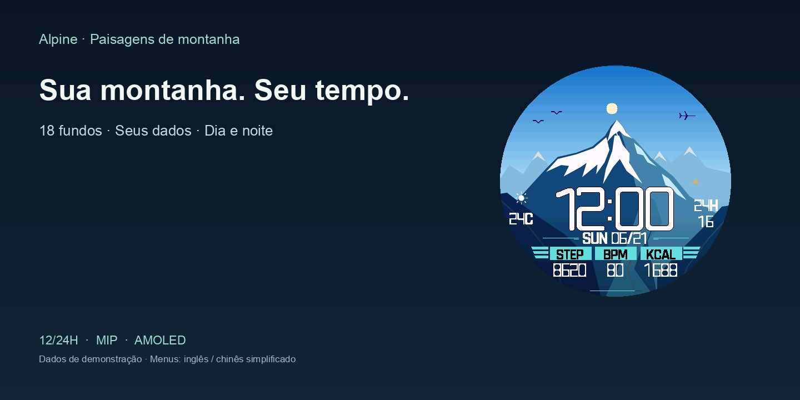
Mostrador em tela cheia com paisagens originais inspiradas no Everest e horário grande e legível. • 18 fundos: automático, amanhecer, dia, entardecer, noite, chuva, neve, nublado, neblina, raios, aurora, arco-íris, fogos, tons quentes, Festival da Primavera, Natal, Halloween e Festival do Meio do Outono. • Salve qualquer fundo como padrão pessoal, mantido após reiniciar. Escolha efeitos ligados ao clima ou um visual fixo. Pássaros e avião vêm desligados e podem ser ativados separados ou juntos. • 6 posições de dados no Instinct, 7 em telas redondas coloridas: passos, frequência cardíaca, calorias totais, altitude, dias estimados de bateria, distância, clima/temperatura, estresse, notificações, nascer/pôr do sol ou ocultar. 4 estilos de painel. • Formato do sistema/12/24 h, segundos opcionais com a tela ativa, Sol/Lua em movimento e fase lunar real. Lua oculta durante o dia por padrão. Cenas automáticas com arco-íris/fogos na meta de passos e luz de barraca para avisos. • Arte própria para MIP monocromático, MIP colorido e AMOLED. Relógio AMOLED sempre ativo discreto e móvel, atualizado a cada minuto. Usa clima e posição em cache, sem ligar GPS ou acessar servidor do desenvolvedor. Menus e configurações continuam em inglês/chinês simplificado; rótulos em inglês abreviado. Traduções da loja não adicionam idiomas ao relógio. Dados dependem do dispositivo, permissões e sincronização; ausentes: --. Posições celestes aproximadas; sem localização, ilustração por horário. Imagens com dados de demonstração. Grátis, sem anúncios ou assinatura; saúde/localização ficam no relógio.
Primeira versão pública: 18 fundos, pássaros/avião opcionais, dados configuráveis, 4 painéis, 12/24 h, Sol/Lua, clima e AMOLED sempre ativo discreto. Otimizados segundos, atualização parcial do pulso e caches. Menus continuam em inglês/chinês simplificado; só a loja é traduzida.
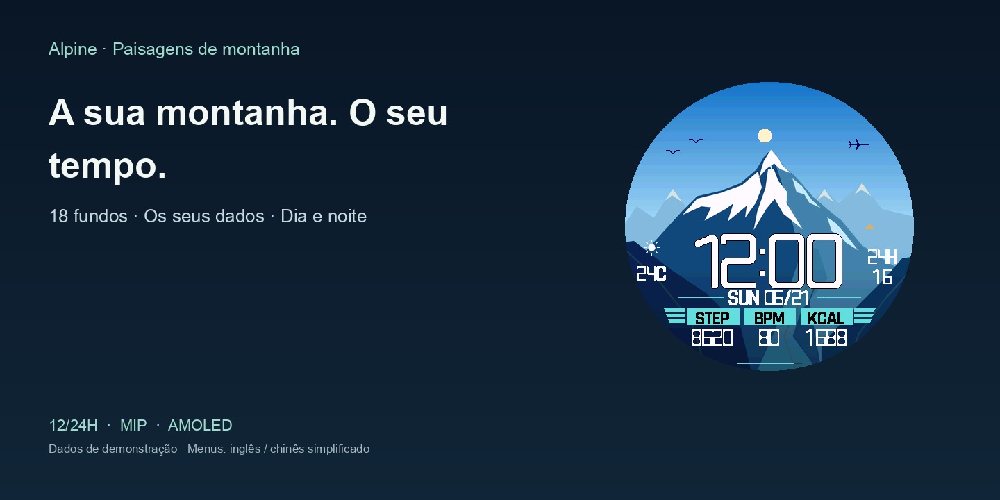
Mostrador de ecrã inteiro com paisagens originais inspiradas no Evereste e horas grandes e legíveis. • 18 fundos: automático, amanhecer, dia, entardecer, noite, chuva, neve, nublado, nevoeiro, relâmpagos, aurora, arco-íris, fogo de artifício, tons quentes, Festa da Primavera, Natal, Halloween e Festival do Meio do Outono. • Guarde qualquer fundo como predefinição pessoal, mantida após reiniciar. Escolha efeitos ligados à meteorologia ou um tema fixo. Aves e avião vêm desativados e podem ser ligados em separado ou em conjunto. • 6 posições de dados no Instinct, 7 em ecrãs redondos a cores: passos, frequência cardíaca, calorias totais, altitude, dias de bateria estimados, distância, tempo/temperatura, stress, notificações, nascer/pôr do sol ou ocultar. 4 estilos de painel. • Formato do sistema/12/24 h, segundos opcionais com o ecrã ativo, Sol/Lua em movimento e fase lunar real. Lua oculta de dia por predefinição. Cenas automáticas com arco-íris/fogo de artifício na meta de passos e luz de tenda para avisos. • Arte própria para MIP monocromático, MIP a cores e AMOLED. Relógio AMOLED permanente discreto e móvel, atualizado por minuto. Usa meteorologia e posição em cache, sem ativar GPS nem contactar servidores do programador. Menus e definições mantêm inglês/chinês simplificado; etiquetas em inglês abreviado. A tradução da loja não acrescenta idiomas ao relógio. Dados conforme dispositivo, permissões e sincronização; ausentes: --. Posições celestes aproximadas; sem localização, ilustração horária. Imagens com dados de demonstração. Gratuito, sem publicidade ou subscrição; saúde/localização ficam no relógio.
Primeira versão pública: 18 fundos, aves/avião opcionais, dados configuráveis, 4 painéis, 12/24 h, Sol/Lua, meteorologia e AMOLED permanente discreto. Otimizados segundos, atualização parcial do pulso e caches. Menus mantêm inglês/chinês simplificado; só a página da loja é traduzida.
Циферблат с оригинальными горными пейзажами во весь экран, вдохновлёнными Эверестом, и крупным временем. • 18 фонов: автоматический, рассвет, день, закат, ночь, дождь, снег, облака, туман, молния, сияние, радуга, фейерверк, тёплые акценты, Праздник весны, Рождество, Хэллоуин и Праздник середины осени. • Любой фон можно сохранить постоянным; выбор остаётся после перезапуска. Доступны связь с погодой и фиксированный стиль. Птицы и самолёт по умолчанию выключены, включаются отдельно или вместе. • 6 позиций данных на Instinct, 7 на круглых цветных экранах: шаги, пульс, общие калории, высота, оценка батареи в днях, расстояние, погода/температура, стресс, уведомления, восход/закат или скрытие. 4 оформления панелей. • Системный/12/24-часовой формат, секунды при активном экране, движение Солнца/Луны и настоящая фаза Луны. Днём Луна по умолчанию скрыта. Автосцены включают радугу/фейерверк за цель шагов и свет палатки для уведомлений. • Отдельная графика для монохромного MIP, цветного MIP и AMOLED. Тусклые перемещаемые часы AMOLED Always-On обновляются раз в минуту. Погода и положение из кэша; без запуска GPS и запросов на сервер разработчика. Меню и настройки часов остаются на английском/упрощённом китайском, подписи сокращены по-английски. Перевод магазина не добавляет языков часам. Данные зависят от модели, разрешений и синхронизации; отсутствующие: --. Положение светил приблизительное, без координат — иллюстрация времени суток. Изображения с демоданными. Бесплатно, без рекламы и подписки; здоровье/местоположение остаются на часах.
Первая публичная версия: 18 фонов, птицы/самолёт по выбору, данные, 4 панели, 12/24 часа, Солнце/Луна, погода и тусклый AMOLED Always-On. Оптимизированы секунды, частичная перерисовка пульса и кэш. Меню остаются английскими/китайскими упрощёнными; переведена только страница магазина.
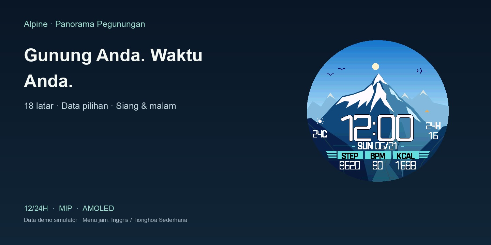
Tampilan jam layar penuh dengan lanskap pegunungan orisinal terinspirasi Everest dan waktu besar yang mudah dibaca. • 18 latar: otomatis, fajar, siang, senja, malam, hujan, salju, mendung, kabut, petir, aurora, pelangi, kembang api, aksen hangat, Imlek, Natal, Halloween, dan Festival Pertengahan Musim Gugur. • Simpan latar favorit, tetap tersimpan setelah dimulai ulang. Pilih efek mengikuti cuaca atau tema tetap. Burung dan pesawat mati secara bawaan; dapat diaktifkan sendiri atau bersama. • 6 posisi data di Instinct, 7 di layar warna bulat. Pilih/sembunyikan langkah, denyut jantung, kalori total, ketinggian, perkiraan sisa hari baterai, jarak, cuaca/suhu, stres, notifikasi, matahari terbit/terbenam. 4 gaya panel. • Format sistem/12/24 jam, detik opsional saat aktif, gerak Matahari/Bulan dan fase Bulan nyata. Bulan disembunyikan pada siang hari secara bawaan. Adegan otomatis menampilkan pelangi/kembang api saat target langkah tercapai serta lampu tenda notifikasi. • Grafis khusus MIP monokrom, MIP warna, AMOLED. Jam AMOLED always-on redup dan berpindah, diperbarui tiap menit. Membaca cache cuaca/lokasi tanpa mengaktifkan GPS atau menghubungi server pengembang. Menu/pengaturan jam tetap Inggris/Tionghoa Sederhana; label memakai singkatan Inggris. Terjemahan toko tidak menambah bahasa jam. Data tergantung perangkat, izin, sinkronisasi; data kosong: --. Posisi langit berupa perkiraan, tanpa lokasi hanya ilustrasi waktu. Gambar memakai data demo. Gratis, tanpa iklan/langganan; data kesehatan/lokasi tetap di jam.
Rilis publik pertama: 18 latar, burung/pesawat opsional, data pilihan, 4 panel, waktu 12/24 jam, Matahari/Bulan, cuaca dan AMOLED always-on redup. Pembaruan detik, gambar ulang denyut dan cache dioptimalkan. Menu tetap Inggris/Tionghoa Sederhana; hanya halaman toko yang diterjemahkan.
Muka jam skrin penuh dengan landskap gunung asli berinspirasikan Everest dan paparan masa besar. • 18 latar: automatik, fajar, siang, senja, malam, hujan, salji, mendung, kabus, kilat, aurora, pelangi, bunga api, warna hangat, Tahun Baharu Cina, Krismas, Halloween dan Perayaan Pertengahan Musim Luruh. • Simpan sebarang latar sebagai pilihan tetap, kekal selepas mula semula. Pilih kesan mengikut cuaca atau tema tetap. Burung dan kapal terbang dimatikan secara lalai, boleh dihidupkan berasingan atau bersama. • 6 kedudukan data pada Instinct, 7 pada skrin warna bulat: langkah, kadar denyutan jantung, jumlah kalori, altitud, anggaran baki hari bateri, jarak, cuaca/suhu, tekanan, pemberitahuan, matahari terbit/terbenam, atau sembunyikan. 4 gaya panel. • Format sistem/12/24 jam, saat pilihan ketika aktif, pergerakan Matahari/Bulan dan fasa Bulan sebenar. Bulan disembunyikan pada siang hari secara lalai. Adegan automatik termasuk pelangi/bunga api untuk sasaran langkah serta lampu khemah pemberitahuan. • Grafik khusus MIP monokrom, MIP warna dan AMOLED. Jam AMOLED sentiasa hidup yang malap dan beralih kedudukan, dikemas kini setiap minit. Menggunakan cache cuaca/lokasi tanpa mengaktifkan GPS atau pelayan pembangun. Menu/tetapan jam kekal bahasa Inggeris/Cina Ringkas; label menggunakan singkatan Inggeris. Terjemahan kedai tidak menambah bahasa jam. Data bergantung pada peranti, kebenaran dan penyegerakan; yang tiada: --. Kedudukan cakerawala anggaran; tanpa lokasi hanya ilustrasi waktu. Gambar menggunakan data demo. Percuma, tiada iklan/langganan; data kesihatan/lokasi kekal pada jam.
Keluaran awam pertama: 18 latar, burung/kapal terbang pilihan, data boleh suai, 4 panel, masa 12/24 jam, Matahari/Bulan, cuaca dan AMOLED sentiasa hidup yang malap. Kemas kini saat, lukisan semula denyutan dan cache dioptimumkan. Menu kekal Inggeris/Cina Ringkas; hanya halaman kedai diterjemahkan.
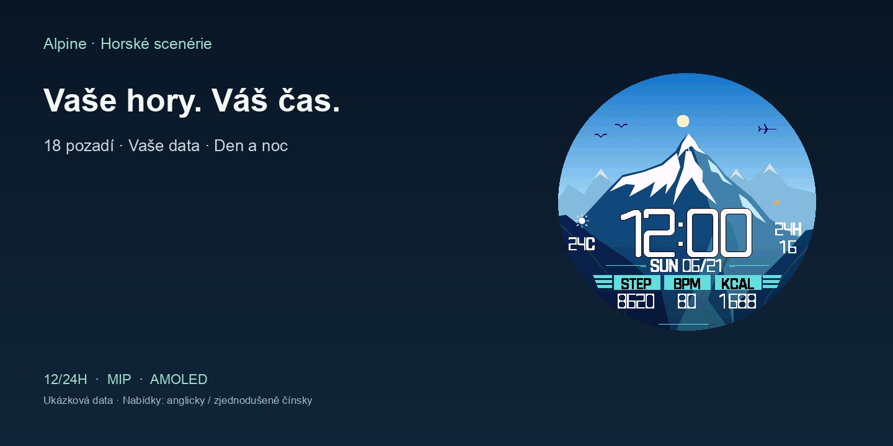
Celoobrazovkový horský ciferník s originální kresbou inspirovanou Everestem a velkým časem. • 18 pozadí: automatické, svítání, den, soumrak, noc, déšť, sníh, oblačno, mlha, blesky, polární záře, duha, ohňostroj, teplé tóny, Svátek jara, Vánoce, Halloween a Svátek středu podzimu. • Libovolné pozadí lze uložit natrvalo, zůstává po restartu. Zvolte návaznost na počasí nebo pevný motiv. Ptáci a letadlo jsou standardně vypnuté; lze zapnout zvlášť či společně. • 6 datových pozic na Instinct, 7 na kulatých barevných displejích: kroky, tep, celkové kalorie, výška, odhad dnů baterie, vzdálenost, počasí/teplota, stres, oznámení, východ/západ slunce nebo skrytí. 4 styly panelu. • Systémový/12/24hodinový čas, volitelné sekundy při probuzení, pohyb Slunce/Měsíce a skutečná fáze Měsíce. Ve dne je Měsíc standardně skrytý. Automatické scény: duha/ohňostroj při splnění cíle kroků a světlo stanu pro oznámení. • Samostatná grafika pro černobílý MIP, barevný MIP a AMOLED. Tlumené pohyblivé hodiny AMOLED Always-On s minutovou aktualizací. Používá uložené počasí/polohu, neaktivuje GPS ani server vývojáře. Nabídky/nastavení hodinek zůstávají anglicky a zjednodušeně čínsky, popisky zkráceně anglicky. Překlad obchodu nepřidává jazyky do hodinek. Data závisí na modelu, oprávněních a synchronizaci; chybějící: --. Nebeské polohy jsou přibližné, bez polohy jen ilustrace denní doby. Snímky obsahují ukázková data. Zdarma, bez reklam/předplatného; zdravotní/polohová data zůstávají v hodinkách.
První veřejná verze: 18 pozadí, volitelní ptáci/letadlo, datová pole, 4 panely, 12/24 hodin, Slunce/Měsíc, počasí a tlumený AMOLED Always-On. Optimalizace sekund, dílčího překreslení tepu a cache. Nabídky zůstávají anglicky/zjednodušeně čínsky; přeložena je pouze stránka obchodu.
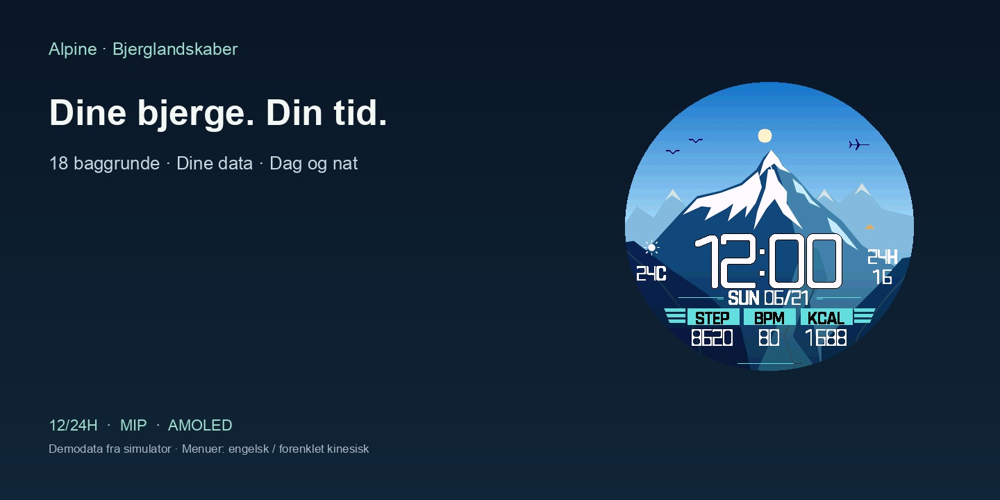
En urskive med originale, Everest-inspirerede bjerglandskaber i fuld skærm og et stort klokkeslæt. • 18 baggrunde: automatisk, daggry, dag, skumring, nat, regn, sne, overskyet, tåge, lyn, nordlys, regnbue, fyrværkeri, varme farver, forårsfestival, jul, halloween og midtefterårsfestival. • Gem enhver baggrund som fast valg, også efter genstart. Vælg vejrafhængige effekter eller et fast tema. Fugle og fly er slået fra som standard og kan aktiveres hver for sig eller sammen. • 6 datafelter på Instinct, 7 på runde farveskærme: skridt, puls, samlede kalorier, højde, anslåede batteridage, distance, vejr/temperatur, stress, notifikationer, solopgang/-nedgang eller skjul. 4 panelstile. • System-/12-/24-timersformat, valgfri sekunder i vågen tilstand, bevægelig Sol/Måne og virkelig månefase. Månen er som standard skjult om dagen. Automatiske scener med regnbue/fyrværkeri ved skridtmål og teltlys ved notifikationer. • Særskilt grafik til monokrom MIP, farve-MIP og AMOLED. Dæmpet, flyttende AMOLED Always-On-ur med minutopdatering. Bruger lagret vejr/position uden at starte GPS eller kontakte udviklerens server. Urets menuer/indstillinger forbliver engelsk/forenklet kinesisk; etiketter er korte engelske. Butiksoversættelsen tilføjer ikke ursprog. Data afhænger af enhed, tilladelser og synkronisering; manglende vises som --. Himmelpositioner er omtrentlige; uden position vises en tidsillustration. Billeder bruger demodata. Gratis, uden reklamer/abonnement; sundheds-/positionsdata bliver på uret.
Første offentlige version: 18 baggrunde, valgfrie fugle/fly, datafelter, 4 paneler, 12/24 timer, Sol/Måne, vejr og dæmpet AMOLED Always-On. Sekunder, delvis pulsvisning og cache optimeret. Urmenuer er stadig engelsk/forenklet kinesisk; kun butikssiden er oversat.
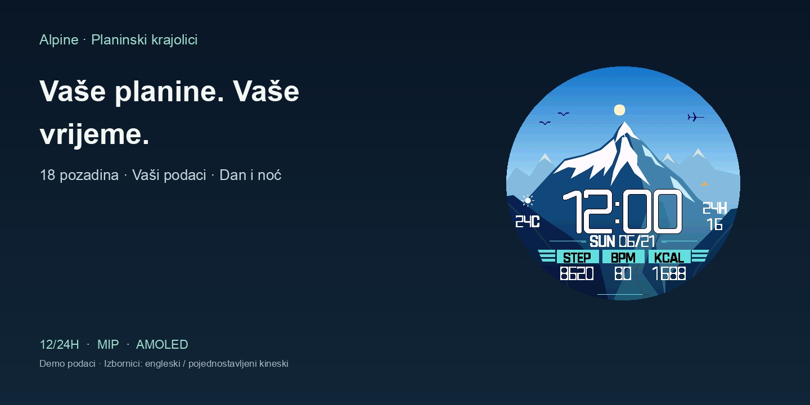
Izgled sata preko cijelog zaslona s izvornim planinskim prizorima nadahnutima Everestom i velikim prikazom vremena. • 18 pozadina: automatska, zora, dan, sumrak, noć, kiša, snijeg, oblaci, magla, munje, polarna svjetlost, duga, vatromet, topli tonovi, Proljetni festival, Božić, Noć vještica i Blagdan sredine jeseni. • Spremite bilo koju pozadinu kao stalni izbor, zadržan nakon ponovnog pokretanja. Odaberite povezivanje s vremenom ili fiksni motiv. Ptice i zrakoplov početno su isključeni; uključuju se zasebno ili zajedno. • 6 položaja podataka na Instinctu, 7 na okruglim zaslonima u boji: koraci, puls, ukupne kalorije, visina, procijenjeni dani baterije, udaljenost, vrijeme/temperatura, stres, obavijesti, izlazak/zalazak Sunca ili skrivanje. 4 stila panela. • Sustavski/12/24-satni format, sekunde dok je sat aktivan, pomično Sunce/Mjesec i stvarna Mjesečeva mijena. Mjesec je početno skriven danju. Automatske scene nude dugu/vatromet za cilj koraka i svjetlo šatora za obavijesti. • Posebna grafika za jednobojni MIP, MIP u boji i AMOLED. Prigušen pomični AMOLED stalni sat, osvježen svake minute. Koristi spremljeno vrijeme/lokaciju, bez aktiviranja GPS-a ili poslužitelja razvojnog programera. Izbornici i postavke sata ostaju na engleskom/pojednostavljenom kineskom, oznake su engleske kratice. Prijevod trgovine ne dodaje jezike satu. Podaci ovise o uređaju, dopuštenjima i sinkronizaciji; nedostajući: --. Nebeski položaji su približni, bez lokacije samo vremenska ilustracija. Slike koriste demo podatke. Besplatno, bez oglasa/pretplate; zdravlje/lokacija ostaju na satu.
Prva javna verzija: 18 pozadina, izbor ptica/zrakoplova, prilagodljivi podaci, 4 panela, 12/24 h, Sunce/Mjesec, vrijeme i prigušeni stalni AMOLED. Optimizirane sekunde, djelomično crtanje pulsa i cache. Izbornici ostaju engleski/pojednostavljeni kineski; prevedena je samo trgovina.
Teljes képernyős hegyi számlap eredeti, Everest ihlette tájakkal és nagy időjelzéssel. • 18 háttér: automatikus, hajnal, nappal, alkony, éjszaka, eső, hó, felhő, köd, villám, sarki fény, szivárvány, tűzijáték, meleg színek, tavaszünnep, karácsony, Halloween és őszközépünnep. • Bármely háttér állandóként menthető, újraindítás után is megmarad. Választható időjárás-követés vagy rögzített téma. A madarak és a repülő alapból kikapcsoltak, külön vagy együtt bekapcsolhatók. • 6 adatpozíció Instincten, 7 kerek színes kijelzőn: lépések, pulzus, összes kalória, magasság, becsült akkumulátornapok, távolság, időjárás/hőmérséklet, stressz, értesítések, napkelte/napnyugta vagy elrejtés. 4 panelstílus. • Rendszer-/12/24 órás formátum, éber állapotban választható másodpercek, mozgó Nap/Hold és valódi holdfázis. A Hold nappal alapból rejtett. Automatikus jelenetek: szivárvány/tűzijáték lépéscélnál és sátorfény értesítéseknél. • Külön grafika monokróm MIP, színes MIP és AMOLED kijelzőhöz. Halvány, mozgó AMOLED állandó óra percenként frissítve. Gyorsítótárazott időjárást/helyzetet használ, GPS-indítás és fejlesztői szerver nélkül. Az óra menüi/beállításai angolok és egyszerűsített kínaiak maradnak, az adatcímkék angol rövidítések. Az áruház fordítása nem bővíti az óra nyelveit. Az adatok eszköz-, engedély- és szinkronfüggők; hiány esetén --. Az égi pozíciók közelítőek, helyadat nélkül napszakillusztráció látható. A képek demoadatokat mutatnak. Ingyenes, reklám/előfizetés nélkül; az egészség- és helyadat az órán marad.
Első nyilvános kiadás: 18 háttér, választható madarak/repülő, adatmezők, 4 panel, 12/24 óra, Nap/Hold, időjárás és halvány AMOLED állandó kijelzés. Optimalizált másodpercek, részleges pulzusrajzolás és gyorsítótár. A menü angol/egyszerűsített kínai marad; csak az áruházoldal fordított.
Een schermvullende wijzerplaat met originele, op de Everest geïnspireerde berglandschappen en grote tijdweergave. • 18 achtergronden: automatisch, dageraad, dag, schemering, nacht, regen, sneeuw, bewolkt, mist, bliksem, poollicht, regenboog, vuurwerk, warme accenten, Lentefeest, Kerstmis, Halloween en Midherfstfeest. • Sla elke achtergrond vast op, ook na opnieuw starten. Kies weersafhankelijke effecten of een vast thema. Vogels en vliegtuig staan standaard uit en kunnen apart of samen aan. • 6 dataposities op Instinct, 7 op ronde kleurenschermen: stappen, hartslag, totale calorieën, hoogte, geschatte batterijdagen, afstand, weer/temperatuur, stress, meldingen, zonsopkomst/-ondergang of verbergen. 4 paneelstijlen. • Systeem-/12-/24-uursformaat, optionele seconden bij actief scherm, bewegende Zon/Maan en echte maanfase. De Maan is overdag standaard verborgen. Automatische scènes met regenboog/vuurwerk bij stapdoel en tentlicht voor meldingen. • Aparte illustraties voor monochroom MIP, kleuren-MIP en AMOLED. Gedimde, verplaatsende AMOLED Always-On-klok met minuutupdates. Gebruikt weer/locatie uit de cache, zonder GPS te starten of een ontwikkelaarsserver te benaderen. Horlogemenu’s/-instellingen blijven Engels/vereenvoudigd Chinees; datalabels zijn Engelse afkortingen. De winkelvertaling voegt geen horlogetalen toe. Data hangt af van apparaat, rechten en synchronisatie; ontbrekend: --. Hemelposities zijn benaderingen; zonder locatie een tijdsillustratie. Afbeeldingen tonen demodata. Gratis, zonder advertenties/abonnement; gezondheids-/locatiedata blijft op het horloge.
Eerste openbare versie: 18 achtergronden, optionele vogels/vliegtuig, datavelden, 4 panelen, 12/24 uur, Zon/Maan, weer en gedimde AMOLED Always-On. Seconden, gedeeltelijke pulsweergave en cache geoptimaliseerd. Menu’s blijven Engels/vereenvoudigd Chinees; alleen de winkelpagina is vertaald.
En heldekkende urskive med originale, Everest-inspirerte fjellandskap og stort klokkeslett. • 18 bakgrunner: automatisk, daggry, dag, skumring, natt, regn, snø, overskyet, tåke, lyn, nordlys, regnbue, fyrverkeri, varme farger, vårfestival, jul, Halloween og midthøstfestival. • Lagre enhver bakgrunn som fast valg, også etter omstart. Velg værstyrte effekter eller et fast tema. Fugler og fly er av som standard og kan aktiveres hver for seg eller sammen. • 6 dataposisjoner på Instinct, 7 på runde fargeskjermer: skritt, puls, totale kalorier, høyde, anslåtte batteridager, avstand, vær/temperatur, stress, varsler, soloppgang/-nedgang eller skjul. 4 panelstiler. • System-/12-/24-timersformat, valgfrie sekunder når aktiv, bevegelig Sol/Måne og ekte månefase. Månen er skjult på dagtid som standard. Automatiske scener med regnbue/fyrverkeri ved skrittmål og teltlys for varsler. • Egen grafikk for monokrom MIP, farge-MIP og AMOLED. Dempet, flyttende AMOLED alltid-på-klokke med oppdatering hvert minutt. Bruker mellomlagret vær/posisjon uten å starte GPS eller kontakte utviklerserver. Klokkemenyer/-innstillinger forblir engelsk/forenklet kinesisk; dataetiketter er engelske forkortelser. Butikkoversettelsen legger ikke til klokkespråk. Data avhenger av enhet, tillatelser og synkronisering; manglende: --. Himmelposisjoner er omtrentlige; uten posisjon vises en tidsillustrasjon. Bildene bruker demodata. Gratis, uten reklame/abonnement; helse-/posisjonsdata blir på klokken.
Første offentlige versjon: 18 bakgrunner, valgfrie fugler/fly, datafelt, 4 paneler, 12/24 timer, Sol/Måne, vær og dempet AMOLED alltid-på. Sekunder, delvis pulsvisning og hurtigbuffer optimalisert. Klokkemenyer forblir engelsk/forenklet kinesisk; bare butikksiden er oversatt.
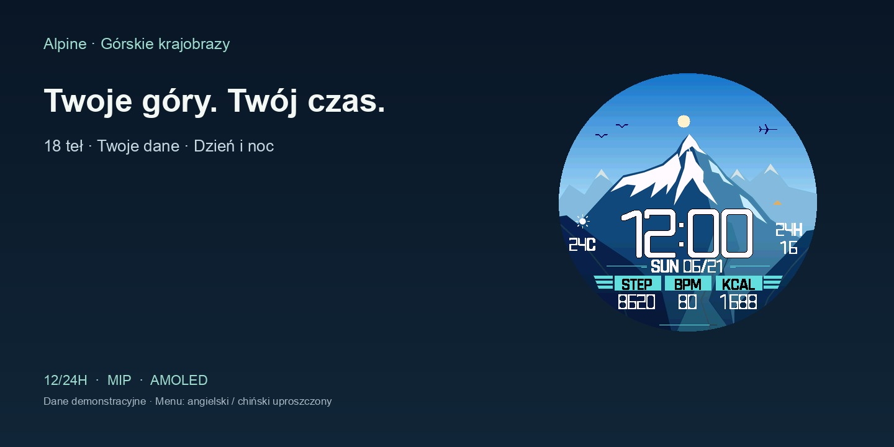
Pełnoekranowa tarcza z oryginalnymi górskimi krajobrazami inspirowanymi Everestem i dużą godziną. • 18 teł: automatyczne, świt, dzień, zmierzch, noc, deszcz, śnieg, chmury, mgła, błyskawice, zorza, tęcza, fajerwerki, ciepłe akcenty, Święto Wiosny, Boże Narodzenie, Halloween i Święto Środka Jesieni. • Zapisz dowolne tło na stałe; pozostanie po ponownym uruchomieniu. Wybierz powiązanie z pogodą lub stały motyw. Ptaki i samolot są domyślnie wyłączone, można włączyć osobno lub razem. • 6 pozycji danych na Instinct, 7 na okrągłych kolorowych ekranach: kroki, tętno, całkowite kalorie, wysokość, szacowane dni baterii, dystans, pogoda/temperatura, stres, powiadomienia, wschód/zachód Słońca lub ukrycie. 4 style panelu. • Format systemowy/12/24 h, opcjonalne sekundy po wybudzeniu, ruch Słońca/Księżyca i rzeczywista faza Księżyca. Księżyc domyślnie ukryty za dnia. Automatyczne sceny: tęcza/fajerwerki po celu kroków i światło namiotu dla powiadomień. • Osobna grafika dla monochromatycznego MIP, kolorowego MIP i AMOLED. Przyciemniony ruchomy zegar AMOLED Always-On odświeżany co minutę. Korzysta z zapisanej pogody/lokalizacji, bez uruchamiania GPS i serwera dewelopera. Menu/ustawienia zegarka pozostają angielskie/chińskie uproszczone; etykiety to angielskie skróty. Tłumaczenie sklepu nie dodaje języków zegarka. Dane zależą od modelu, uprawnień i synchronizacji; brak: --. Pozycje niebieskie są przybliżone, bez lokalizacji to ilustracja pory dnia. Obrazy zawierają dane demonstracyjne. Bezpłatnie, bez reklam/subskrypcji; zdrowie/lokalizacja pozostają na zegarku.
Pierwsza wersja publiczna: 18 teł, opcjonalne ptaki/samolot, dane, 4 panele, 12/24 h, Słońce/Księżyc, pogoda i przyciemniony AMOLED Always-On. Optymalizacja sekund, częściowego rysowania pulsu i pamięci podręcznej. Menu pozostaje angielskie/chińskie uproszczone; tłumaczenie dotyczy tylko sklepu.
Celoobrazovkový horský ciferník s originálnou kresbou inšpirovanou Everestom a veľkým časom. • 18 pozadí: automatické, svitanie, deň, súmrak, noc, dážď, sneh, oblačno, hmla, blesky, polárna žiara, dúha, ohňostroj, teplé tóny, Sviatok jari, Vianoce, Halloween a Sviatok stredu jesene. • Ľubovoľné pozadie možno uložiť natrvalo aj po reštarte. Zvoľte prepojenie s počasím alebo pevný motív. Vtáky a lietadlo sú predvolene vypnuté, možno ich zapnúť osobitne alebo spolu. • 6 dátových pozícií na Instinct, 7 na okrúhlych farebných displejoch: kroky, tep, celkové kalórie, výška, odhad dní batérie, vzdialenosť, počasie/teplota, stres, oznámenia, východ/západ Slnka alebo skrytie. 4 štýly panelov. • Systémový/12/24-hodinový formát, voliteľné sekundy po prebudení, pohyb Slnka/Mesiaca a skutočná fáza Mesiaca. Cez deň je Mesiac predvolene skrytý. Automatické scény: dúha/ohňostroj pri cieli krokov a svetlo stanu pre oznámenia. • Samostatná grafika pre čiernobiely MIP, farebný MIP a AMOLED. Tlmené pohyblivé hodiny AMOLED Always-On s minútovou aktualizáciou. Využíva uložené počasie/polohu, nespúšťa GPS ani server vývojára. Ponuky/nastavenia hodiniek zostávajú anglicky/zjednodušene čínsky; popisy sú anglické skratky. Preklad obchodu nepridáva jazyky hodinkám. Údaje podľa zariadenia, oprávnení a synchronizácie; chýbajúce: --. Nebeské polohy sú približné, bez polohy len ilustrácia dennej doby. Obrázky obsahujú demo údaje. Zadarmo, bez reklám/predplatného; zdravie/poloha zostávajú v hodinkách.
Prvá verejná verzia: 18 pozadí, voliteľné vtáky/lietadlo, dátové polia, 4 panely, 12/24 hodín, Slnko/Mesiac, počasie a tlmený AMOLED Always-On. Optimalizované sekundy, čiastočné kreslenie tepu a cache. Ponuky zostávajú anglické/zjednodušene čínske; preložená je len stránka obchodu.
Celozaslonska številčnica z izvirnimi gorskimi pokrajinami po navdihu Everesta in veliko uro. • 18 ozadij: samodejno, zora, dan, mrak, noč, dež, sneg, oblaki, megla, strele, polarni sij, mavrica, ognjemet, topli poudarki, pomladni festival, božič, noč čarovnic in praznik sredi jeseni. • Poljubno ozadje shranite kot stalno; ostane po ponovnem zagonu. Izberite vremensko povezavo ali fiksen motiv. Ptice in letalo so privzeto izklopljeni, vklopite jih ločeno ali skupaj. • 6 podatkovnih mest na Instinctu, 7 na okroglih barvnih zaslonih: koraki, srčni utrip, skupne kalorije, višina, ocenjeni dnevi baterije, razdalja, vreme/temperatura, stres, obvestila, sončni vzhod/zahod ali skrij. 4 slogi plošč. • Sistemski/12/24-urni format, izbirne sekunde ob aktivnem zaslonu, premik Sonca/Lune in prava Lunina mena. Luna je podnevi privzeto skrita. Samodejni prizori vključujejo mavrico/ognjemet ob cilju korakov in luč šotora za obvestila. • Ločena grafika za enobarvni MIP, barvni MIP in AMOLED. Zatemnjena premikajoča se stalna ura AMOLED s posodobitvijo na minuto. Uporablja shranjeno vreme/lokacijo brez zagona GPS ali strežnika razvijalca. Meniji/nastavitve ure ostajajo v angleščini/poenostavljeni kitajščini, oznake so angleške kratice. Prevod trgovine ne dodaja jezikov uri. Podatki so odvisni od naprave, dovoljenj in sinhronizacije; manjkajoči: --. Položaji nebesnih teles so približni, brez lokacije le prikaz dela dneva. Slike vsebujejo demo podatke. Brezplačno, brez oglasov/naročnine; zdravje/lokacija ostajata v uri.
Prva javna izdaja: 18 ozadij, izbirne ptice/letalo, podatki, 4 plošče, 12/24 ur, Sonce/Luna, vreme in zatemnjena stalna ura AMOLED. Izboljšane sekunde, delni izris utripa in predpomnilnik. Meniji ostajajo angleški/poenostavljeno kitajski; prevedena je le stran trgovine.
Koko näytön kellotaulu, jossa on alkuperäisiä Everestin innoittamia vuoristomaisemia ja suuri kellonaika. • 18 taustaa: automaattinen, aamunkoitto, päivä, iltahämärä, yö, sade, lumi, pilvet, sumu, salama, revontulet, sateenkaari, ilotulitus, lämpimät sävyt, kevätjuhla, joulu, Halloween ja keskisyksyn juhla. • Tallenna mikä tahansa tausta pysyväksi; valinta säilyy uudelleenkäynnistyksessä. Valitse säälinkitys tai kiinteä teema. Linnut ja lentokone ovat oletuksena pois, ja ne voi kytkeä erikseen tai yhdessä. • 6 tietopaikkaa Instinctissä, 7 pyöreällä värinäytöllä: askeleet, syke, kokonaiskalorit, korkeus, arvioidut akkupäivät, matka, sää/lämpötila, stressi, ilmoitukset, auringonnousu/-lasku tai piilotus. 4 paneelityyliä. • Järjestelmän/12/24 tunnin aika, valinnaiset sekunnit hereillä, liikkuva Aurinko/Kuu ja todellinen kuunvaihe. Kuu on päivällä oletuksena piilossa. Automaattitiloissa askeltavoitteen sateenkaari/ilotulitus ja ilmoitusten telttavalo. • Oma grafiikka yksiväriselle MIP-, väri-MIP- ja AMOLED-näytölle. Himmeä liikkuva AMOLED-aina päällä -kello päivittyy minuutin välein. Käyttää välimuistin sää-/sijaintitietoja, ei käynnistä GPS:ää tai yhteyttä kehittäjän palvelimeen. Kellon valikot/asetukset säilyvät englanniksi/yksinkertaistetuksi kiinaksi, tietotunnisteet ovat englannin lyhenteitä. Kauppakäännös ei lisää kellon kieliä. Tiedot riippuvat laitteesta, luvista ja synkronoinnista; puuttuvat: --. Taivaan sijainnit ovat likimääräisiä; ilman sijaintia vuorokaudenaikakuva. Kuvissa on demotietoja. Maksuton, ei mainoksia/tilausta; terveys-/sijaintitiedot pysyvät kellossa.
Ensimmäinen julkinen versio: 18 taustaa, valinnaiset linnut/lentokone, tietokentät, 4 paneelia, 12/24 h, Aurinko/Kuu, sää ja himmeä AMOLED-aina päällä. Sekunnit, sykkeen osittaispiirto ja välimuisti optimoitu. Valikot pysyvät englanniksi/yksinkertaistetuksi kiinaksi; vain kauppasivu on käännetty.
En urtavla över hela skärmen med egna Everest-inspirerade bergslandskap och stor tidsvisning. • 18 bakgrunder: automatisk, gryning, dag, skymning, natt, regn, snö, moln, dimma, blixtar, norrsken, regnbåge, fyrverkeri, varma färger, vårfestival, jul, Halloween och midhöstfestival. • Spara valfri bakgrund som fast val, även efter omstart. Välj väderstyrda effekter eller fast tema. Fåglar och flygplan är av från början och kan aktiveras separat eller tillsammans. • 6 datapositioner på Instinct, 7 på runda färgskärmar: steg, puls, totala kalorier, höjd, uppskattade batteridagar, distans, väder/temperatur, stress, aviseringar, soluppgång/-nedgång eller dölj. 4 panelstilar. • System-/12-/24-timmarsformat, valfria sekunder när vaken, rörlig Sol/Måne och verklig månfas. Månen döljs dagtid som standard. Automatiska scener med regnbåge/fyrverkeri vid stegmål och tältljus för aviseringar. • Egen grafik för enfärgad MIP, färg-MIP och AMOLED. Dämpad rörlig AMOLED alltid-på-klocka med minutuppdatering. Använder cachat väder/plats utan att starta GPS eller kontakta utvecklarserver. Klockmenyer/-inställningar förblir engelska/förenklad kinesiska; dataetiketter är engelska förkortningar. Butiksöversättningen lägger inte till klockspråk. Data beror på enhet, behörigheter och synkning; saknade: --. Himmelpositioner är ungefärliga; utan plats visas en tidsillustration. Bilderna använder demodata. Gratis, utan reklam/prenumeration; hälso-/platsdata stannar på klockan.
Första offentliga versionen: 18 bakgrunder, valfria fåglar/flygplan, datafält, 4 paneler, 12/24 timmar, Sol/Måne, väder och dämpad AMOLED alltid-på. Sekunder, partiell pulsritning och cache optimerade. Menyerna förblir engelska/förenklad kinesiska; endast butikssidan är översatt.
Καντράν πλήρους οθόνης με πρωτότυπα ορεινά τοπία εμπνευσμένα από το Έβερεστ και μεγάλη ένδειξη ώρας. • 18 φόντα: αυτόματο, αυγή, μέρα, σούρουπο, νύχτα, βροχή, χιόνι, σύννεφα, ομίχλη, αστραπές, σέλας, ουράνιο τόξο, πυροτεχνήματα, θερμοί τόνοι, Γιορτή της Άνοιξης, Χριστούγεννα, Halloween και Γιορτή του Μέσου Φθινοπώρου. • Αποθηκεύστε οποιοδήποτε φόντο μόνιμα, ακόμη και μετά από επανεκκίνηση. Επιλέξτε σύνδεση με τον καιρό ή σταθερό θέμα. Πουλιά και αεροπλάνο είναι αρχικά ανενεργά, ενεργοποιούνται χωριστά ή μαζί. • 6 θέσεις δεδομένων στο Instinct, 7 σε στρογγυλές έγχρωμες οθόνες: βήματα, παλμοί, συνολικές θερμίδες, υψόμετρο, εκτιμώμενες ημέρες μπαταρίας, απόσταση, καιρός/θερμοκρασία, στρες, ειδοποιήσεις, ανατολή/δύση ή απόκρυψη. 4 στυλ πάνελ. • Ώρα συστήματος/12/24 ωρών, προαιρετικά δευτερόλεπτα όταν είναι ενεργό, κινούμενος Ήλιος/Σελήνη και πραγματική φάση Σελήνης. Την ημέρα η Σελήνη κρύβεται αρχικά. Αυτόματες σκηνές με ουράνιο τόξο/πυροτεχνήματα στον στόχο βημάτων και φως σκηνής για ειδοποιήσεις. • Ξεχωριστά γραφικά για μονόχρωμο MIP, έγχρωμο MIP και AMOLED. Χαμηλής φωτεινότητας κινούμενο ρολόι AMOLED συνεχούς προβολής, με ενημέρωση ανά λεπτό. Χρησιμοποιεί αποθηκευμένο καιρό/θέση, χωρίς ενεργοποίηση GPS ή διακομιστή προγραμματιστή. Μενού/ρυθμίσεις ρολογιού παραμένουν αγγλικά/απλοποιημένα κινεζικά, ετικέτες με αγγλικές συντομογραφίες. Η μετάφραση καταστήματος δεν προσθέτει γλώσσες ρολογιού. Δεδομένα ανά συσκευή, άδειες και συγχρονισμό· ελλείψεις: --. Οι ουράνιες θέσεις είναι προσεγγιστικές, χωρίς θέση μόνο χρονική απεικόνιση. Εικόνες με δεδομένα επίδειξης. Δωρεάν, χωρίς διαφημίσεις/συνδρομή· υγεία/τοποθεσία μένουν στο ρολόι.
Πρώτη δημόσια έκδοση: 18 φόντα, προαιρετικά πουλιά/αεροπλάνο, δεδομένα, 4 πάνελ, 12/24 ώρες, Ήλιος/Σελήνη, καιρός και χαμηλή συνεχής προβολή AMOLED. Βελτιστοποιήθηκαν δευτερόλεπτα, μερική σχεδίαση παλμών και cache. Μενού αγγλικά/απλοποιημένα κινεζικά όπως πριν· μεταφράστηκε μόνο η σελίδα καταστήματος.
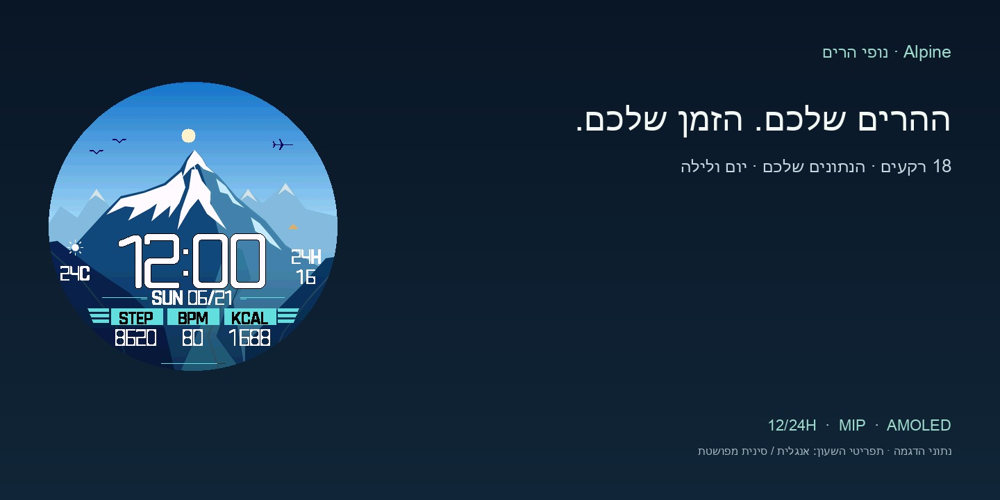
לוח שעון במסך מלא עם נופי הרים מקוריים בהשראת האוורסט ושעה גדולה וברורה. • 18 רקעים: אוטומטי, שחר, יום, דמדומים, לילה, גשם, שלג, עננים, ערפל, ברקים, זוהר קוטבי, קשת, זיקוקים, גוונים חמים, חג האביב, חג המולד, ליל כל הקדושים וחג אמצע הסתיו. • אפשר לשמור כל רקע כבחירה קבועה, גם לאחר הפעלה מחדש. בחרו אפקטים לפי מזג האוויר או עיצוב קבוע. ציפורים ומטוס כבויים כברירת מחדל, וניתן להפעילם בנפרד או יחד. • 6 מיקומי נתונים ב-Instinct ו-7 במסכים עגולים צבעוניים: צעדים, דופק, סך קלוריות, גובה, אומדן ימי סוללה, מרחק, מזג אוויר/טמפרטורה, לחץ, התראות, זריחה/שקיעה או הסתרה. 4 סגנונות לוחות. • תבנית מערכת/12/24 שעות, שניות אופציונליות במצב פעיל, שמש/ירח נעים ומופע ירח אמיתי. הירח מוסתר ביום כברירת מחדל. סצנות אוטומטיות עם קשת/זיקוקים ביעד צעדים ואור אוהל להתראות. • גרפיקה נפרדת ל-MIP מונוכרומטי, MIP צבעוני ו-AMOLED. שעון AMOLED תמיד-פועל מעומעם ונע, שמתעדכן בכל דקה. משתמש במזג אוויר/מיקום שמורים, ללא הפעלת GPS או פנייה לשרת המפתח. תפריטי והגדרות השעון נשארים באנגלית/סינית מפושטת; התוויות הן קיצורים באנגלית. תרגום החנות לא מוסיף שפות לשעון. הנתונים תלויים במכשיר, הרשאות וסנכרון; חוסר מוצג כ --. מיקומי גרמי השמיים משוערים, וללא מיקום זו המחשה לפי שעה. התמונות מכילות נתוני הדגמה. חינם, ללא פרסומות/מינוי; נתוני בריאות ומיקום נשארים בשעון.
גרסה ציבורית ראשונה: 18 רקעים, ציפורים/מטוס לבחירה, נתונים מותאמים, 4 לוחות, 12/24 שעות, שמש/ירח, מזג אוויר ו-AMOLED קבוע ומעומעם. שופרו עדכוני שניות, ציור חלקי של דופק ומטמון. התפריטים נשארים באנגלית/סינית מפושטת; רק עמוד החנות מתורגם.
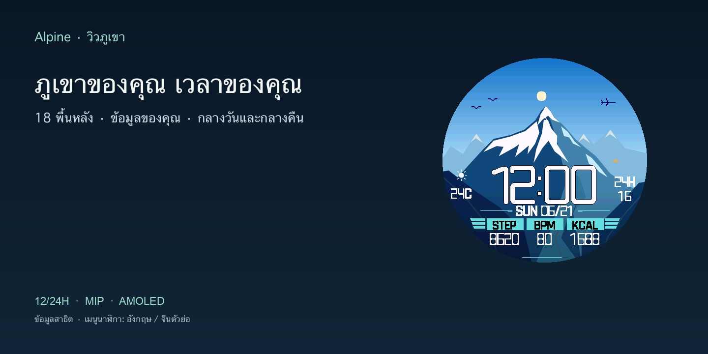
หน้าปัดเต็มจอพร้อมภาพภูเขาต้นฉบับที่ได้แรงบันดาลใจจากเอเวอเรสต์และตัวเลขเวลาขนาดใหญ่ • พื้นหลัง 18 แบบ: อัตโนมัติ รุ่งเช้า กลางวัน พลบค่ำ กลางคืน ฝน หิมะ เมฆ หมอก ฟ้าผ่า แสงเหนือ รุ้ง พลุ โทนอบอุ่น ตรุษจีน คริสต์มาส ฮาโลวีน และไหว้พระจันทร์ • บันทึกพื้นหลังใดก็ได้เป็นค่าโปรดและคงไว้หลังเริ่มใหม่ เลือกเอฟเฟกต์ตามอากาศหรือธีมคงที่ นกและเครื่องบินปิดเป็นค่าเริ่มต้น เปิดแยกกันหรือพร้อมกันได้ • ช่องข้อมูล 6 ตำแหน่งบน Instinct และ 7 ตำแหน่งบนจอสีทรงกลม: ก้าว ชีพจร แคลอรีรวม ความสูง วันแบตเตอรี่โดยประมาณ ระยะทาง อากาศ/อุณหภูมิ ความเครียด การแจ้งเตือน พระอาทิตย์ขึ้น/ตก หรือซ่อน มีแผงข้อมูล 4 สไตล์ • รูปแบบเวลาตามระบบ/12/24 ชั่วโมง วินาทีขณะหน้าจอทำงาน ดวงอาทิตย์/ดวงจันทร์เคลื่อนตามเวลาและข้างขึ้นข้างแรมจริง ค่าเริ่มต้นซ่อนดวงจันทร์ในเวลากลางวัน ฉากอัตโนมัติมีรุ้ง/พลุเมื่อถึงเป้าก้าวและไฟเต็นท์สำหรับการแจ้งเตือน • ภาพเฉพาะสำหรับ MIP ขาวดำ MIP สี และ AMOLED โหมดจอติดตลอด AMOLED ใช้นาฬิกาหรี่แสงที่ย้ายตำแหน่งและอัปเดตทุกนาที ใช้แคชอากาศ/ตำแหน่ง ไม่เปิด GPS หรือเชื่อมต่อเซิร์ฟเวอร์ผู้พัฒนา เมนูและการตั้งค่านาฬิกายังคงเป็นอังกฤษ/จีนตัวย่อ ป้ายข้อมูลใช้ตัวย่ออังกฤษ การแปลหน้าร้านไม่เพิ่มภาษาบนนาฬิกา ข้อมูลขึ้นกับรุ่น สิทธิ์และการซิงค์ หากไม่มีจะแสดง -- ตำแหน่งท้องฟ้าเป็นค่าประมาณ หากไม่มีพิกัดจะเป็นภาพสื่อช่วงเวลา รูปใช้ข้อมูลสาธิต ฟรี ไม่มีโฆษณาหรือสมาชิก ข้อมูลสุขภาพ/ตำแหน่งอยู่ในนาฬิกา
รุ่นสาธารณะครั้งแรก: 18 พื้นหลัง นก/เครื่องบินตามเลือก ช่องข้อมูล 4 สไตล์แผง เวลา 12/24 ชั่วโมง ดวงอาทิตย์/ดวงจันทร์ อากาศ และจอ AMOLED ติดตลอดแบบหรี่แสง ปรับปรุงวินาที การวาดค่าชีพจรเฉพาะส่วนและแคช เมนูยังเป็นอังกฤษ/จีนตัวย่อ แปลเฉพาะหน้าร้านเท่านั้น